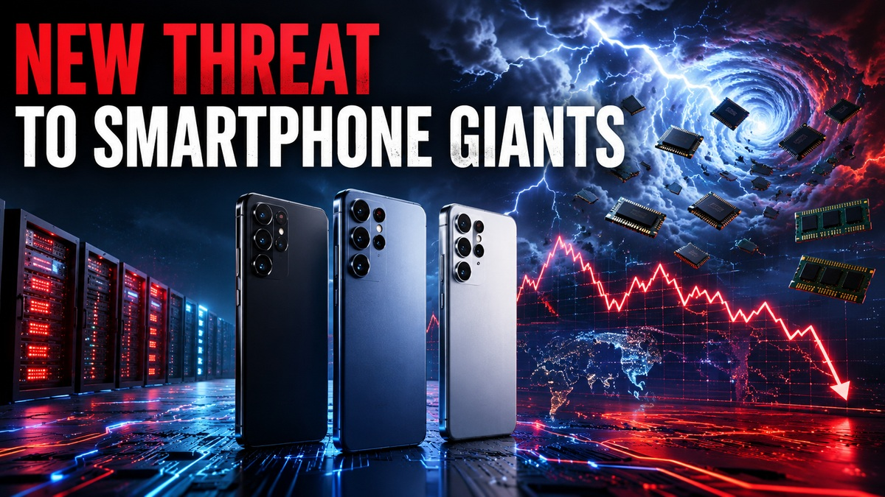

Apple, Samsung, and Xiaomi Face a New Threat Nobody Expected: Why the Smartphone Industry Is Entering a New Era

The global smartphone market is facing an unexpected challenge that goes far beyond competition between brands. Rising memory chip costs, supply constraints, AI-driven semiconductor demand, and changing consumer behavior are reshaping the industry and creating
The smartphone industry is entering one of its most challenging periods in years. While competition between manufacturers remains intense, a new combination of supply-chain pressures, rising memory costs, AI-driven semiconductor demand and slower upgrade cycles is creating a threat that affects nearly every major player.
Introduction
For years, the smartphone industry has been defined by a familiar rivalry. Apple focused on premium experiences and ecosystem integration. Samsung balanced scale with innovation. Xiaomi built its reputation on aggressive value and rapid expansion. Consumers typically viewed the market as a battle between brands competing through better cameras, faster processors and increasingly sophisticated software.
That narrative is changing. A growing number of industry indicators suggest that the next major challenge facing smartphone manufacturers is not a rival product. Instead, it is a structural shift affecting the entire market.
The combination of rising memory prices, semiconductor supply constraints, growing AI infrastructure demand and changing consumer purchasing habits is creating a new competitive environment. In this environment, operational efficiency and supply-chain resilience may matter as much as innovation.
What Happened
The smartphone market has been under pressure for several years as consumers extend upgrade cycles. Modern devices remain capable for longer, reducing the urgency to replace them annually.
At the same time, AI development has dramatically increased demand for advanced memory and semiconductor components. Technology companies building AI infrastructure are consuming increasing volumes of memory products, creating supply constraints and driving up costs across the electronics industry.
Industry forecasts suggest that smartphone shipments could face one of their most difficult periods in more than a decade as manufacturers struggle with higher component costs and weaker consumer demand in certain price segments.
Unlike previous slowdowns, this challenge is not isolated to a specific region or brand. It affects premium and value-focused manufacturers alike, although the impact varies depending on product strategy and pricing power.
The Unexpected Threat
The real threat is not a new smartphone company. It is the growing imbalance between component costs and consumer willingness to pay higher prices.
Memory components have become increasingly expensive due to demand from AI systems and data-center infrastructure. Smartphone manufacturers depend on those same components. As costs rise, brands face difficult decisions. They can absorb the increases and accept lower margins, or pass them on to consumers through higher retail prices.
Neither option is particularly attractive. Premium brands may have more pricing flexibility, but even loyal customers have limits. Value-focused brands depend heavily on aggressive pricing, making cost increases especially painful.
This creates a situation where companies that previously competed on specifications may now compete on supply-chain efficiency, component sourcing and manufacturing scale.
Missing Details
Several important questions remain unanswered.
First, it remains unclear how long memory supply constraints will persist. Some analysts expect stabilization as manufacturers expand production. Others believe AI demand will continue absorbing available capacity for years.
Second, there is uncertainty regarding consumer behavior. Buyers have become increasingly selective, but future economic conditions could either accelerate upgrades or extend replacement cycles further.
Third, the impact of emerging device categories remains difficult to predict. Foldables, AI-focused devices and new form factors could stimulate demand, but adoption rates remain uncertain.
Finally, geopolitical developments continue influencing semiconductor supply chains. Trade restrictions, manufacturing concentration and regional tensions add additional complexity to future forecasts.
Contradictions in the Market
The smartphone market currently presents several apparent contradictions.
On one hand, premium devices continue performing relatively well. Consumers purchasing high-end products often remain willing to spend on flagship experiences.
On the other hand, many mid-range and budget segments face increasing pressure. Rising component costs make it harder to maintain aggressive pricing while preserving profitability.
Another contradiction involves innovation. Companies continue investing heavily in AI, advanced cameras and new designs. Yet many consumers report that existing devices already satisfy most daily requirements.
There is also a geographic contradiction. Some regions continue showing strong premium demand while others remain highly price sensitive. This creates different strategic priorities depending on market exposure.
Buyer Advice
For consumers, the changing environment has several implications.
Buyers considering a smartphone upgrade should pay closer attention to long-term value rather than headline specifications. Software support, durability and battery longevity are becoming increasingly important as replacement cycles extend.
Consumers interested in premium devices may find that flagship pricing remains elevated. Waiting for promotional periods could deliver better value than purchasing immediately after launch.
Those shopping in the mid-range segment should carefully compare specifications because competition remains intense. Many devices continue offering strong performance despite broader market challenges.
Refurbished and certified pre-owned smartphones may also become increasingly attractive as new-device pricing rises.
Market Impact
The broader market consequences could be significant.
Higher component costs may accelerate consolidation, particularly among smaller manufacturers with limited scale. Larger companies generally possess stronger supplier relationships and greater financial flexibility.
Investment priorities may also shift. Instead of focusing exclusively on headline features, manufacturers could place greater emphasis on vertical integration, chip development and supply-chain control.
The growing importance of AI is another major factor. Companies capable of integrating hardware, software and AI services effectively may gain competitive advantages beyond traditional smartphone specifications.
At the same time, rising costs could encourage longer ownership cycles, reducing annual shipment volumes while increasing the importance of services and ecosystem revenue.
Competitor Impact
Apple enters this period with significant strengths. Strong brand loyalty, ecosystem integration and premium positioning provide some protection against pricing pressures.
Samsung benefits from extensive manufacturing capabilities and broad product coverage across multiple price segments. Its diversified business structure also offers strategic flexibility.
Xiaomi faces a more complex challenge. The company built much of its success on value-oriented pricing. Maintaining that proposition becomes more difficult when component costs rise.
Meanwhile, companies such as Huawei, Honor, Oppo and Vivo continue competing aggressively in key markets. Their performance could influence how market share evolves over the next several years.
Another competitive factor involves in-house technology development. More manufacturers are exploring proprietary chips and deeper hardware-software integration to improve control over critical technologies.
Future Outlook
The smartphone industry is unlikely to disappear or experience a dramatic collapse. Demand for connected devices remains enormous. However, growth patterns are changing.
The next phase of competition may focus less on annual specification increases and more on ecosystem value, AI integration, supply-chain resilience and long-term ownership experiences.
Companies capable of balancing innovation with operational efficiency will likely emerge strongest. Those heavily dependent on volume-driven growth could face greater pressure.
Consumers should expect continued experimentation with foldables, AI-powered features and new device categories. Whether these innovations generate a major upgrade cycle remains one of the industry's biggest unanswered questions.
Conclusion
Apple, Samsung and Xiaomi are facing a challenge that few observers would have predicted several years ago. The threat is not a breakthrough device from a rival manufacturer. Instead, it is a structural shift driven by supply constraints, rising costs, AI-related demand and changing consumer behavior.
The companies that adapt most effectively to these conditions will shape the next chapter of the smartphone industry. For buyers, the result may be a market that places greater emphasis on value, longevity and ecosystem strength rather than simple specification races.
FAQ
What is the new threat facing smartphone brands?
The combination of rising memory costs, AI-related semiconductor demand and changing consumer purchasing habits.
Will smartphone prices increase?
Some models may become more expensive if manufacturers pass higher component costs to consumers.
Which companies are best positioned?
Brands with strong supply chains, premium pricing power and diversified operations may have advantages.
Will consumers upgrade less frequently?
Current trends suggest many buyers are keeping smartphones longer than in previous years.
Related Reading
For more context, compare this story with Redmi Turbo 5 Could Rewrite Battery Expectations and Nothing and RCB Phone Buzz: Smart Marketing or a Real Buyer Opportunity? and Apple?s Siri AI Moment: Should Indian iPhone Buyers Upgrade or Wait? and Lava Bold N2 5G: The Budget Phone Question Is Trust, Not Just Battery.